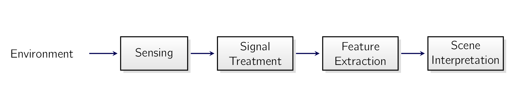
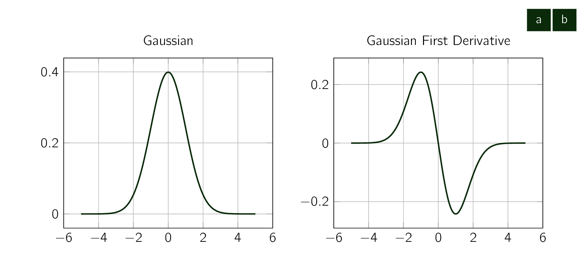
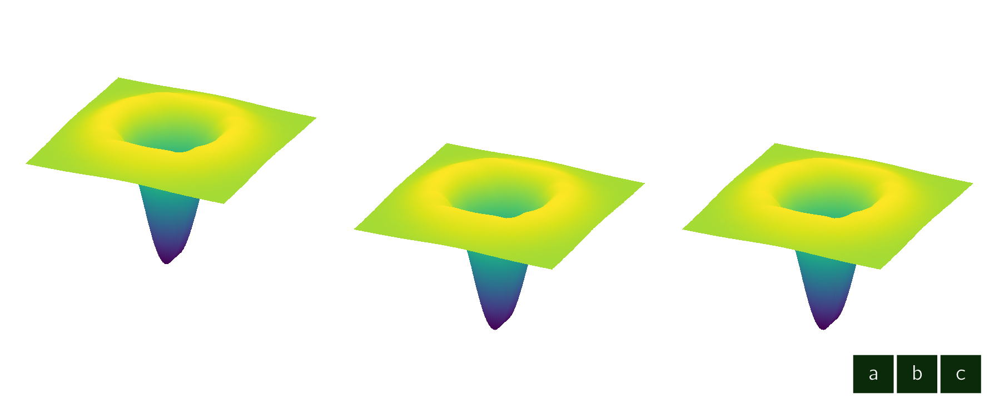

An AMRAutonomous Mobile RoboticsSelf-navigating machines moving materials and goods independently without fixed tracks or wires. They use smart software, cameras, and sensors to map spaces and safely steer around people or obstacles in real time. must be able to determine its relationship to the environment by making measurements with its sensors and then using those measured signals. A wide variety of sensing technologies are available, as we discussed in this chapter. But every sensor we have presented is fundamentally imperfect:
Therefore, sensor inputs must be used in a way that enables the robot to interact with its environment successfully in spite of measurement uncertainty. There are two (2) strategies for using uncertain sensor input to guide the robot’s behavior:
- i.
- To use each sensor measurement as a raw and individual value. Such raw sensor values could for example be tied directly to robot behavior, whereby the robot’s actions are a function of its sensor inputs. Alternatively, the raw sensors values could be used to update an intermediate model, with the robot’s actions being triggered as a function of this model rather than the individual sensor measurements.
- ii.
- To extract information from one or more sensor readings first, generating a higher-level percept that can then be used to inform the robot’s model and perhaps the robot’s actions directly. We call this process feature extraction, and it is this next, optional step in the perceptual interpretation pipeline, shown in Fig. 3.24 that we will now discuss.
In practical terms, AMRAutonomous Mobile RoboticsSelf-navigating machines moving materials and goods independently without fixed tracks or wires. They use smart software, cameras, and sensors to map spaces and safely steer around people or obstacles in real time. do NOT necessarily use feature extraction and scene inter- pretation for every activity. Instead, robots will interpret sensors to varying degrees depend- ing on each specific functionality.
For local obstacle avoidance, raw ranging sensor strikes may be combined in an occupancy grid model, enabling smooth avoidance of obstacles meters away. For map-building and precise navigation, the range sensor values and even vision sensor measurements may pass through the complete perceptual pipeline, being sub- jected to feature extraction followed by scene interpretation to minimize the impact of indi- vidual sensor uncertainty on the robustness of the robot’s map-making and navigation skills. The pattern that thus emerges is that, as one moves into more sophisticated, long-term per- ceptual tasks, the feature extraction and scene interpretation aspects of the perceptual pipe- line become essential.
Features are recognizable structures of elements in the environment. They usually can be extracted from measurements and mathematically described. Good features are always perceivable and easily detectable from the environment. We distinguish between low-level features [90] geometric primitives. like lines, circles or polygons and high-level features (i.e., objects) such as edges, doors, tables or a trash can. At one extreme, raw sensor data provides a large volume of data, but with low distinctiveness of each individual quantum of data. Making use of raw data has the potential advantage that every bit of information is fully used, and therefore has a high conservation of information.
Low level features are abstractions of raw data, and as such provide a lower volume of data while increasing the distinctiveness of each feature. The hope, when one incorporates low level features, is that the features are filtering out poor or useless data, but of course it is also likely that some valid information will be lost as a result of the feature extraction process. High level features provide maximum abstraction from the raw data, thereby reducing the volume of data as much as possible while providing highly distinctive resulting features.
The abstraction process has the risk of filtering away important information, potentially lowering data utilization.
Although features must have some spatial locality, their geometric extent can range widely. For example, a corner feature inhabits a specific coordinate location in the geometric world. In contract, a visual fingerprint identifying a specific room in an office building applies to the entire room, but has a location that is spatially limited to the one, particular room. In mobile robotics, features play an especially important role in the creation of environmental models. They enable more compact and robust descriptions of the environment, helping a mobile robot during both map-building and localization. When designing a mobile robot, a critical decision revolves around choosing the appropriate features for the robot to use. A number of factors are essential to this decision:
- Target Environment
-
For geometric features to be useful, the target geometries must be readily detected in the actual environment. For example, line features are extremely useful in office building environments due to the abundance of straight walls segments while the same feature is virtually useless when navigating Mars.
- Available Sensors
-
Obviously the specific sensors and sensor uncertainty of the robot im- pacts the appropriateness of various features. Armed with a laser rangefinder, a robot is well qualified to use geometrically detailed features such as corner features due to the high qual- ity angular and depth resolution of the laser scanner. In contrast, a sonar-equipped robot may not have the appropriate tools for corner feature extraction.
- Computational Power
-
Vision-based feature extraction can effect a significant computa- tional cost, particularly in robots where the vision sensor processing is performed by one of the robot’s main processors.
- Environment representation
-
Feature extraction is an important step toward scene inter- pretation, and by this token the features extracted must provide information that is consonant with the representation used for the environment model. For example, non-geometric vi- sion-based features are of little value in purely geometric environment models but can be of great value in topological models of the environment. Figure 4.35 shows the application of two different representations to the task of modeling an office building hallway. Each ap- proach has advantages and disadvantages, but extraction of line and corner features has much more relevance to the representation on the left. Refer to Chapter 5, Section 5.5 for a close look at map representations and their relative tradeoffs. In the following two sections, we present specific feature extraction techniques based on the two most popular sensing modalitites of mobile robotics: range sensing and visual appear- ance-based sensing.
Most of today’s features extracted from ranging sensors are geometric primitives such as line segments or circles. The main reason for this is that for most other geometric primitives the parametric description of the features becomes too complex and no closed form solution exists. Here we will describe line extraction in detail, demonstrating how the uncertainty models presented above can be applied to the problem of combining multiple sensor mea- surements. Afterwards, we briefly present another very successful feature for indoor mobile robots, the corner feature, and demonstrate how these features can be combined in a single representation.
Line Extraction
Geometric feature extraction is usually the process of comparing and matching measured sensor data against a predefined description, or template, of the expect feature. Usually, the system is overdetermined in that the number of sensor measurements exceeds the number of feature parameters to be estimated.
As the sensor measurements all have some error, there is no perfectly consistent solution and, instead, the problem is one of optimization.
Here we will have a look at an optimization-based solution to the problem of extracting a line feature from a set of uncertain sensor measurements.
Probabilistic Line Extraction
Our goal is to extract a line feature based on a set of sensor measurements as shown in Figure 4.36. There is uncertainty associated with each of the noisy range sensor measurements, and so there is no single line that passes through the set. Instead, we wish to select the best possible match, given some optimization criterion.
Formally speaking, suppose ranging measurement points in polar coordinates are produced by the robot’s sensors. We know that there is uncertainty associated with each measurement, and so we can model each measurement using two random variables .
In this analysis we assume that uncertainty with respect to the actual value iii of and are independent. Based on Equation (4.56) we can state this formally:
| (3.24) |
Furthermore, we will assume each random variable is subject to a Gaussian probability density curve, with a mean at the true value and with some specified variance:
| (3.25) |
Given some measurement point, say , we can calculate the corresponding Euclidean coordinates as and . If there were no error,we would want to find a line for which all measurements lie on that line:
| (3.26) |
Of course there is measurement error, and so this quantity will not be zero. When it is non-zero, this is a measure of the error between the measurement point and the line, specifically in terms of the minimum orthogonal distance between the point and the line.
It is always important to understand how the error that shall be minimized is being measured.
For example a number of line extraction techniques do not minimize this orthogonal point-line distance, but instead the distance parallel to the y-axis between the point and the line. A good illustration of the variety of optimization criteria is available in [18] where several algorithms for fitting circles and ellipses are presented which minimize algebraic and geometric distances.
For each specific , we can write the orthogonal distance between and the line as:
| (3.27) |
If we consider each measurement to be equally uncertain, we can sum the square of all errors together, for all measurement points, to quantify an overall fit between the line and all of the measurements:
| (3.28) |
Our goal is to minimize when selecting the line parameters . We can do so by solving the non-linear equation system:
| (3.29) |
The above formalism is considered an unweighted least squares solution because no distinction is made from among the measurements. In reality, each sensor measurement may have its own, unique uncertainty based on the geometry of the robot and environment when the measurement was recorded.
To make use of the variance that models the uncertainty regarding distance of a particular sensor measurement, we compute an individual weight for each measurement using the formula: [92] The issue of determining an adequate weight when is given (and perhaps some additional information) is complex.
| (3.30) |
Then Eq. (3.28) becomes:
| (3.31) |
It can be shown that the solution of (4.70) in the weighted least square sense is:
| (3.32) |
where,
In practice equation (4.73) uses the four-quadrant arc tangent ()
Propagation of Uncertainty during Line Extraction
Returning to the subject of Section (4.2.3), we would like understand how the uncertainties of specific range sensor measurements propagate to govern the uncertainty of the extracted line. In other words, how does uncertainty in and propagate in Equations (4.73) and ii (4.74) to affect the uncertainty of and r? This requires direct application of Equation 4.60 with A and R representing the random out- puts variables of and r respectively. The goal is to derive the 2 Π2 output covariance ma- trix
| (3.33) |
given the
Image Pre-Processing Many image processing algorithms make use of the second derivative of the image intensity.
Because of the susceptibility of such high-order derivative algorithms to changes in illumination in the basic signal, it is important to smooth the signal so changes in intensity are due to real changes in the luminosity of objects in the scene rather than random variations due to imaging noise. A standard approach is convolution with a Gaussian distribution function, as we described earlier in Section 4.1.8.2:
| (3.34) |
Of course, when approximated by a discrete kernel, [93] in this context, and to reiterate, a kernel is a matrix which is used to change the properties of an image. such as a matrix, the result is essentially local, weighted averaging:
| (3.35) |
Such a low pass filter effectively removes high-frequency noise, and this in turn causes the first derivative and especially the second derivative of intensity to be far more stable.
Because of the important of gradients and derivatives to image processing, such Gaussian smoothing pre-processing is a popular first step of virtually all computer vision algorithms.
Spatially Localised Features
In computer vision, many algorithms assume the object of interest occupies only a sub-region [94] i.e., a part of the image. of the image, and therefore the features being sought are localized spatially within images of the scene. Local image processing techniques find features that are local to a subset of pixels, and such local features map to specific locations in the physical world.
This makes them particularly applicable to geometric models of the robot’s environment.
The most popular local feature extractor used in AMRAutonomous Mobile RoboticsSelf-navigating machines moving materials and goods independently without fixed tracks or wires. They use smart software, cameras, and sensors to map spaces and safely steer around people or obstacles in real time. is the edge detector, and so we begin with a discussion of this classical topic in computer vision. However, AMRAutonomous Mobile RoboticsSelf-navigating machines moving materials and goods independently without fixed tracks or wires. They use smart software, cameras, and sensors to map spaces and safely steer around people or obstacles in real time. face the specific mobility challenges of obstacle avoidance and localization. In view of obstacle avoidance, we will look at the vision-based extraction of the floor plane, enabling a robot to detect all areas that can be safely traversed. Finally, in view of the need for localization we discuss the role of vision-based feature extraction in the detection of robot navigation landmarks.
Edge Detection
Figure 4.42 shows an image of a scene containing a part of a ceiling lamp as well as the edges extracted from this image. Edges define regions in the image plane where a significant change in the image brightness takes place.
As shown in this example, edge detection significantly reduces the amount of information in an image, and is therefore a useful potential feature during image interpretation. The hypothesis is that edge contours in an image correspond to important scene contours. As the Figure 4.42(b) shows, this is not entirely true. There is a difference between the output of an edge detector and an ideal line drawing. Typically, there are missing contours, as well as noise contours that do not correspond to anything of significance in the scene.
The fundamental challenge of edge detection is visualized in Figure 4.23. Figure 4.23(top left) shows the 1-D section of an ideal edge. But the signal produced by a camera will look more like figure 4.23(top right). The location of the edge is still at the same x value, but a significant level of high-frequency noise affects the signal quality.
A naive edge detector would simply differentiate, since an edge by definition is located where there are large transitions in intensity. As shown in figure 4.23(bottom right), differentiation of the noisy camera signal results in subsidiary peaks that can make edge detection very challenging. A far more stable derivative signal can be generated simply by pre-processing the camera signal using the Gaussian smoothing function described above.
Below, we will have a look at the popular edge detection algorithms, all of which operate on this same basic principle:

Optimal Edge Detection: Canny The current reference edge detector throughout machine vision community was invented by John Canny [95] John F. Canny (1958 - ) is an Australian computer scientist, and Paul E Jacobs and Stacy Jacobs Distinguished Professor of Engineering in the Computer Science Department of the University of California, Berkeley. He has made significant contributions in various areas of computer science and mathematics, including artificial intelligence, robotics, computer graphics, human-computer interaction, computer security, computational algebra, and computational geometry. in 1983 [16]. This edge detector was born out of a formal approach in which Canny treated edge detection as a signal processing problem in which there are three (3) explicit goals:
-
Maximize the signal-to-noise ratio,
-
Achieve the highest precision possible on the location of edges, and
-
Minimize the number of edge responses associated with each edge.
The Canny edge extractor smooths a given image using Gaussian convolution and then looks for maxima in the rectified derivative. In practice the smoothing and differentiation are combined into one operation because:
| (3.36) |
This gives us the following property:
We wish to detect edges in any direction. Since given is directional, this requires application of two (2) perpendicular filters, just as we did for the Laplacian in Eq. (3.12) . We define the two filters as:
The result is a basic algorithm for detecting edges at arbitrary orientations: The algorithm for detecting edge pixels at an arbitrary orientation is:
- i.
- Convolve the image with and to obtain the gradient components and , respectively.
- ii.
- Define the square of the gradient magnitude:
- iii.
- Mark those peaks in that are above some predefined threshold T.
Once edge pixels are extracted, the next step is to construct complete edges. A popular next step in this process is non-maxima suppression.
Using edge direction information, the process involves revisiting the gradient value and determining whether or not it is at a local maximum. If not, then the value is set to zero.
This causes only the maxima to be preserved, and thus reduce the thickness of all edges to a single pixel (Figure 4.45).
Finally, we are ready to go from edge pixels to complete edges.
- i.
- First, find adjacent, or connected, sets of edges and group them into ordered lists.
- ii.
- Second, use thresholding to eliminate the weakest edges.

Gradient Edge Detectors On an AMRAutonomous Mobile RoboticsSelf-navigating machines moving materials and goods independently without fixed tracks or wires. They use smart software, cameras, and sensors to map spaces and safely steer around people or obstacles in real time., computation time must be minimised to retain the real-time behavior of the robot. Therefore simpler, discrete kernel operators are commonly used to approximate the behaviour of the Canny edge detector. One such early operators was developed by Roberts in 1965 [22]. He used two (2) masks to calculate the gradient across the edge in two (2) diagonal directions. Let be the value calculated from the first mask and from the second mask. Roberts obtained the gradient magnitude with the equation:
| (3.37) |
Prewitt (1970) [22] used two masks oriented in the row and column directions. Let p 1 bethevaluecalculatedfromthefirstmaskandp thevaluecalculatedfromthesecondmask. 2 Prewitt obtained the gradient magnitude G and the gradient direction taken in a clock- wise angle with respect to the column axis shown in the following equation.
| (3.38) |
In the same year Sobel [22] used, like Prewitt, two masks oriented in the row and column direction. Let s be the value calculated from the first mask and s the value calculated 12 from the second mask, he obtained the same results as Prewitt for the gradient magnitude G and the gradient direction taken in a clockwise angle with respect to the column axis. Figure 4.46 shows application of the Sobel filter to a visual scene.
| (3.39) |
Dynamic Thresholding Most image processing algorithms have generally been tested in laboratory conditions or using static image databases. However, AMRAutonomous Mobile RoboticsSelf-navigating machines moving materials and goods independently without fixed tracks or wires. They use smart software, cameras, and sensors to map spaces and safely steer around people or obstacles in real time. operate in dynamic real-world settings where there is no guarantee regarding optimal or even stable illumination. A machine vision system for AMRAutonomous Mobile RoboticsSelf-navigating machines moving materials and goods independently without fixed tracks or wires. They use smart software, cameras, and sensors to map spaces and safely steer around people or obstacles in real time. has to adapt to the changing illumination. Therefore a constant threshold level for edge detection is NOT practical. The same scene with different illumination will results in edge images with considerable differences. To dynamically adapt the edge detector to the ambient light, a more adaptive threshold is required, and one approach involves calculating that threshold based on a statistical analysis of the image about to be processed. To do this, a histogram of the gradient magnitudes of the processed image is calculated (fig- ure 4.47). With this simple histogram it is easy to consider only the pixels with the highest gradient magnitude for further calculation steps. The pixels are counted backward starting at the highest magnitude. The gradient magnitude of the point where is reached will be used as the temporary threshold value.
The motivation for this technique is that the pixels with the highest gradient are expected to be the most relevant ones for the processed image. Furthermore, for each image, the same number of relevant edge pixels is considered, independent of illumination. It is important to pay attention to the fact that the number of pixels in the edge image delivered by the edge detector is not .
As most detector uses non-maxima suppression, the number of edge pixels will be further reduced.
Straight edge extraction: Hough transforms
In AMRAutonomous Mobile RoboticsSelf-navigating machines moving materials and goods independently without fixed tracks or wires. They use smart software, cameras, and sensors to map spaces and safely steer around people or obstacles in real time. the straight edge is often extracted as a specific feature.
The Hough Transform is a simple tool for extracting edges of a particular shape[15, 26]. Here we explain its application to the problem of extracting straight edges.
Suppose a pixel in the Image is part of an edge. Any straight line edge including pp point must satisfy the equation:
This equation can only be satisfied with a constrained set of possible values for and . In other words, this equation is satisfied only by lines through that pass through .
Now consider a second pixel, in . Any line passing through this second pixel must satisfy the equation:
What if and ?
Then the line defined by both equations is one and the same as it is the line that passes through both and .
More generally, for all pixels which are part of a single straight line through , they must all lie on a line defined by the same values for and . The general definition of this line is, of course, the simple linear equation, . The Hough Transform uses this basic property, creating a mechanism so each edge pixel can “vote” for various values of the (, ) parameters. The lines with the most votes at the end are straight edge features:
- 1.
- Create a two-dimensional array () with axes that tessellate the values of and .
- 2.
- Initialize the array to zero: for all values of and .
- 3.
- For each edge pixel
in , loop over
all values of
and :
if then .
- 4.
- Search the cells in to identify those with the largest value. Each such cell’s indices corresponds to an extracted straight line edge in .
Floor Plane Extraction
Obstacle avoidance is one of the important tasks required of most AMRAutonomous Mobile RoboticsSelf-navigating machines moving materials and goods independently without fixed tracks or wires. They use smart software, cameras, and sensors to map spaces and safely steer around people or obstacles in real time.. Range-based sensors provide effective means for identifying most types of obstacles facing an AMRAutonomous Mobile RoboticsSelf-navigating machines moving materials and goods independently without fixed tracks or wires. They use smart software, cameras, and sensors to map spaces and safely steer around people or obstacles in real time.. In fact, because they directly measure range to objects in the world, range-based sensors such as ultrasonic and laser rangefinders are inherently well-suited for the task of obstacle detection. However, each ranging sensor has their limitations:
In addition to each individual shortcoming, range-based obstacle detection systems will have difficulty detecting small or flat objects that are on the ground. For example, a vacuum cleaner may need to avoid large, flat objects, such as paper or money left on the floor. In addition, different types of floor surfaces cannot easily be discriminated by ranging. For ex- ample, a sidewalk-following robot will have difficulty discriminating grass from pavement using range sensing alone.
Floor plane extraction is a vision-based approach for identifying the traversable portions of the ground. Because it makes use of edges and color in a variety of implementations, such obstacle detection systems can easily detect obstacles in cases that are difficult for tradition- al ranging devices.
As is the case with all vision-based algorithms, floor plane extraction succeeds only in en- vironments that satisfy several important assumptions:
-
Obstacles differ in appearance from the ground.
-
The ground is flat and its angle to the camera is known.
-
There are no overhanging obstacles.
The first assumption is a requirement in order to discriminate the ground from obstacles us- ing its appearance. The second and third assumptions allow floor plane extraction algo- rithms to estimate the robot’s distance to obstacles detected.
Floor plane extraction in artificial environments
In a controlled environment, the floor, walls and obstacles can be designed so that the walls and obstacle appear significantly differently than the floor in a camera image. Shakey, the first autonomous robot developed from 1966 through 1972 at SRI, used vision-based floor plane extraction in a manufactured environment for obstacle detection [104]. Shakey’s ar- tificial environment used textureless, homogeneously white floor tiles. Furthermore, the base of each wall was painted with a high-contrast strip of black paint and the edges of all simple polygonal obstacles were also painted black.
In Shakey’s environment, edges corresponded to non-floor objects, and so the floor plane extraction algorithm simply consisted of the application of an edge detector to the mono- chrome camera image. The lowest edges detected in an image corresponded to the closest obstacles, and the direction of straight line edges extracted from the image provided clues regarding not only the position but also the orientation of walls and polygonal obstacles.
Although this very simple appearance-based obstacle detection system was successful, it should be noted that special care had to be taken at the time in order to create indirect light- ing in the laboratory such that shadows were not cast, as the system would falsely interpret the edges of shadows as obstacles.
Adaptive floor plane extraction Floor plane extraction has succeeded, not only in artificial environments, but in real-world mobile robot demonstrations in which a robot avoids both static obstacles such as walls and dynamic obstacles such as passers-by based on segmentation of the floor plane at a rate of several Hz. Such floor plane extraction algorithms tend to use edge detection and color de- tection jointly while making certain assumptions regarding the floor, for example the floor’s maximum texture or approximate color range [98]
Each system based on fixed assumptions regarding the floor’s appearance is limited to only those environments satisfying its constraints. A more recent approach is that of adaptive floor plane extraction, whereby the parameters defining the expected appearance of the floor are allowed to vary over time. In the simplest instance, one can assume that the pixels at the bottom of the image (i.e. closest to the robot) are part of the floor and contain no obstacles. Then, statistics computed on these "floor sample" pixels can be used to classify the remain- ing image pixels.
The key challenge in adaptive systems is the choice of what statistics to compute using the "floor sample" pixels. The most popular solution is to construct one or more histograms based on the floor sample pixel values. In Edge Detection above, we found histograms to be useful in determining the best cut point in edge detection thresholding algorithms. His- tograms are also useful as discrete representations of distributions. Unlike the Gaussian rep- resentation, a histogram can capture multi-modal distributions. Histograms can also be updated very quickly and use very little processor memory. An intensity histogram of the "floor sample" subregion I of image I is constructed as follows: 1. As pre-processing, smooth If using a Gaussian smoothing operator 2. Initialize a histogram array H with n intensity values: H[i] = 0 for i = 1, ..., n 3. For every pixel (x,y) in I increment the histogram: H[I (x, y)] += 1 ff
The histogram array H serves as a characterization of the appearance of the floor plane. Of- ten, several 1D histograms are constructed, corresponding to intensity, hue and saturation for example. Classification of each pixel in I as floor plane or obstacle is performed by look- ing at the appropriate histogram counts for the qualities of the target pixel. For example, if the target pixel has a hue that never occurred in the "floor sample," then the corresponding hue histogram will have a count of zero. When a pixel references a histogram value below a pre-defined threshold, that pixel is classified as an obstacle.
Figure 4.48 shows an appearance-based floor plane extraction algorithm operating on both indoor and outdoor images [99]. Note that, unlike the static floor extraction algorithm, the adaptive algorithm is able to successfully classify a human shadow due to the adaptive his- togram representation. An interesting extension of the work has been to not use the static floor sample assumption, but rather to record visual history and to use, as the floor sample, only the portion of prior visual images that has successfully rolled under the robot during mobile robot motion.
Appearance-based extraction of the floor plane have been demonstrated on both indoor and outdoor robots for real-time obstacle avoidance with a bandwidth of up to 10 Hz. Applica- tions include robotics lawn mowing, social indoor robots and automated electric wheel- chairs.
Whole-Image Features
A single visual image provides so much information regarding a robot’s immediate sur- roundings that an alternative to searching the image for spatially localized features is to make use of the information captured by the entire image to extract a whole-image feature. Whole-image features are not designed to identify specific spatial structures such as obsta- cles or the position of specific landmarks. Rather, they serve as compact representations of the entire local region. From the perspective of robot localization, the goal is to extract one or more features from the image that are correlated well with the robot’s position. In other words, small changes in robot position should cause only small changes to whole-image fea- tures, while large changes in robot position should cause correspondingly large changes to whole-image features.
We present two techniques for whole-image feature extraction below. The first technique is another popular application of the image histogramming approach. The resulting image histogram comprises a set of whole-image features derived directly from the pixel informa- tion of an image. The second technique, tiered extraction, covers approaches in which a whole-image feature is built by first extracting spatially localized features, then composing these features together to form a single meta-feature.
Direct Extraction Image Histograms Recall that we wish to design whole-image features that are insensitive to small amount of robot motion while registering significant changes for large-scale robot motion. A logical first step in designing a vision-based sensor for this purpose is to maximize the field of view of the camera. As the field of view increases, small-scale structure in the robot’s environ- ment occupies a smaller proportion of the image, thereby mitigating the impact of individual scene objects on image characteristics. The catadioptric camera system, now very popular in mobile robotics, offers an extremely wide field of view [100]. This imaging system con- sists of a high-quality CCD camera mounted, together with customized optics, towards a parabolic mirror. The image provides a 360ř view of the robot’s environment, as shown in Figure 4.49. The catadioptric image is a 360ř image warped onto a two-dimensional image surface. Be- cause of this, it offers another critical advantage in terms of sensitivity to small-scale robot motion. If the camera is mounted vertically on the robot so that the image represents the environment surrounding the robot (i.e. its horizon), then rotation of the camera and robot simply results in image rotation. In short, the catadioptric camera can be rotationally invari- ant to field of view. Of course, mobile robot rotation will still change the image; that is, pixel positions will change, although the new image will simply be a rotation of the original image. But we in- tend to extract image features via histogramming. Because histogramming is a function of the set of pixel values and not the position of each pixel, the process is pixel position-invari- ant. When combined with the Catadioptric camera’s field of view invariance, we can create a system that is invariant to robot rotation and insensitive to small-scale robot translation. A color camera’s output image generally contains useful information along multiple bands: r, g and b values as well as hue, saturation and luminance values. The simplest histogram- based extraction strategy is to build separate 1D histograms characterizing each band. Giv- en a color camera image, G, the first step is to create mappings from G to each of the n avail- able bands. We use G to refer to an array storing the values in band i for all pixels in G. i Each band-specific histogram H is calculated as before: i 1. As pre-processing, smooth Gi using a Gaussian smoothing operator 2. Initialize H with n levels: H[j] = 0 for = 1, ..., n i 3. For every pixel (x,y) in G increment the histogram: [G [x, y]]+= 1 iii Given the image shown in Figure 4.49, the image histogram technique extracts six histo- grams (for each of r, g, b, hue, saturation and luminance) as shown in Figure 4.50In order to make use of such histograms as whole-image features, we need ways to compare to histo- grams to quantify the likelihood that the histograms map to nearby robot positions. The problem of defining useful histogram distance metrics is itself an important subfield within the image retrieval field. For an overview refer to [101].
One of the most successful distance metrics encountered in AMRAutonomous Mobile RoboticsSelf-navigating machines moving materials and goods independently without fixed tracks or wires. They use smart software, cameras, and sensors to map spaces and safely steer around people or obstacles in real time. localization is the Jeffrey Divergence [†-1] Deselaers, T., Keysers, D. & Ney, H. Features for image retrieval: an experimental comparison. Information retrieval 11, 77–107 (2008), Boros, E. Targeting a Practical Approach for Robot Vision with Ensembles of Visual Features in 2012 Imperial College Computing Student Workshop (2012), 22–28. Given two (2) histograms, and , with and denoting the histogram entries, the Jeffrey divergence is defined as:
| (3.40) |
Using measures such as the Jeffrey divergence, AMRAutonomous Mobile RoboticsSelf-navigating machines moving materials and goods independently without fixed tracks or wires. They use smart software, cameras, and sensors to map spaces and safely steer around people or obstacles in real time. have used whole-image histogram features to identify their position in real time against a database of previously recorded images of locations in their environment.
Using this whole-image extraction approach, a robot can readily recover the particular hallway or particular room in which it is located [102].
Tiered Extraction: Image Fingerprint Extraction
An alternative to extracting a whole-image feature directly from pixel values is to use a tiered approach:
We describe one particular implementation of this approach, in which the resulting whole-image feature is called the image fingerprint [103]. As with other whole-image extraction techniques, because low sensitivity to small robot motions is desired, the system makes use of a 360ř panoramic im- age, here constructed as a mosaic of images captured with a standard CMOS-chip camera.
The first extraction tier searches the panoramic image for spatially localized features: verti- cal edges and 16 discrete hues of color. The vertical edge detector is a straightforward gra- dient approach implementing a horizontal difference operator. Vertical edges are "voted upon" by each edge pixel just as in a vertical edge Hough transform. As described in Section (4.3.2.1), an adaptive threshold is used to reduce the number of edges. Suppose the Hough table’s tallies for each candidate vertical line have a mean and a standard deviation . The chosen threshold is simply + .
Vertical color bands are identified in largely the same way, identifying statistics over the oc- currence of each color, then filtering out all candidate color patches except those with tallies greater than + . Figure 4.51 shows two sample panoramic images and their associated fingerprints. Note that each fingerprint is converted to an ASCII string representation.
Just as with histogram distance metrics in the case of image histogramming, we need a quan- tifiable measure of the distance between two fingerprints strings. String matching algo- rithms are yet another large field of study, with particularly interesting applications today in the areas of genetics [96]. Note that we may have strings that differ not just in a single ele- ment value, but even in their overall length. For example, Figure 4.52 depicts three actual sequences generated using the above algorithm. The top string should match Place 1, but note that there are deletions and insertions between the two strings.
The technique used in the fingerprinting approach for string differencing is known as a Min- imum Energy Algorithm. Taken from the stereo vision community, this optimization-based algorithm will find the minimum energy required to "transform" one sequence into another sequence. The result is a distance metric that is relatively insensitive to the addition or sub- traction of individual local features while still able to robustly identify the correct matching string in a variety of circumstances.
It should be clear from the previous two subsections that whole-image feature extraction is straightforward with vision-based perception and can be applicable for mobile robot local- ization. But it is spatially localized features that continue to play a dominant role because of their immediate application to the more urgent need for real-time obstacle avoidance.
-
¶
- LoGLaplacian of Gaussian
An image processing filter that combines Gaussian smoothing with the Laplacian second-derivative operator. It first blurs an image to remove noise, then highlights regions of rapid intensity change to detect edges accurately via zero-crossings. It is also known as the Marr-Hildreth-Operator.
-
¶
- AMRAutonomous Mobile Robotics
Self-navigating machines moving materials and goods independently without fixed tracks or wires. They use smart software, cameras, and sensors to map spaces and safely steer around people or obstacles in real time.
- 1.
- Deselaers, T., Keysers, D. & Ney, H. Features for image retrieval: an experimental comparison. Information retrieval 11, 77–107 (2008), Boros, E. Targeting a Practical Approach for Robot Vision with Ensembles of Visual Features in 2012 Imperial College Computing Student Workshop (2012), 22–28
- [90].
- geometric primitives.
- [91].
- e.g. least squares estimation.
- [92].
- The issue of determining an adequate weight when is given (and perhaps some additional information) is complex.
- [93].
- in this context, and to reiterate, a kernel is a matrix which is used to change the properties of an image.
- [94].
- i.e., a part of the image.
- [95].
- John F. Canny (1958 - ) is an Australian computer scientist, and Paul E Jacobs and Stacy Jacobs Distinguished Professor of Engineering in the Computer Science Department of the University of California, Berkeley. He has made significant contributions in various areas of computer science and mathematics, including artificial intelligence, robotics, computer graphics, human-computer interaction, computer security, computational algebra, and computational geometry.